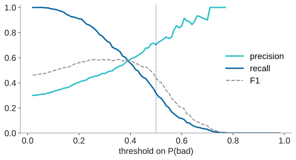
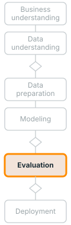
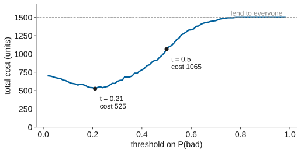
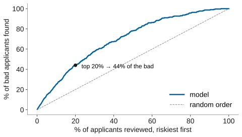

name: title layout: true class: cover --- count: false .section-mark.center[ ## Evaluating a classifier ### Classification, metrics, ROC and costs on credit risk <br /> Oscar Esteban <<code>oscar.esteban@hevs.ch</code>> <br /> EAD · Exploration avancée de données et intelligence décisionnelle · 16.10.2026 ] ??? This deck moves from a model's probability output to the bank's grant-or-refuse decision. It begins with classification itself: one attribute on slide 2, two on slide 3, then all twenty on slide 4. Slides 5 and 6 name the positive class, bad, and define the four outcomes that arise when a prediction is compared with the truth. Slides 7 to 9 fill the confusion matrix, establish the baseline, and define the metrics that summarise it: precision, recall, F1 and the false-positive rate. Slide 10 shows the trade-off between precision and recall as the threshold moves, and slide 11 asks which metric should steer the model. Slides 12 and 13 introduce the ROC curve and its area (AUC), a ranking measure that does not depend on the class proportions or the costs, while slide 14 shows that precision does change with the class mix, a problem when bad credits are rare. Slides 15 to 20 return to the threshold: the hands-on panels, the cost matrix, the cost-optimal threshold, and three different thresholds for the same model. Slide 21 adds cumulative gains, and slide 22 enters costs in Dataiku. The ideas come from chapters 7 and 8 of Provost and Fawcett (2013), listed on slide 23, and from the CRISP-DM 1.0 guide (Chapman et al., 2000). --- name: newsection layout: true .perma-sidebar[ <p class="rotate"> <a rel="license" href="http://creativecommons.org/licenses/by/4.0/"><img alt="Creative Commons License" style="border-width:0; height: 20px; padding-top: 6px;" src="https://i.creativecommons.org/l/by/4.0/88x31.png" /></a> <span style="padding-left: 10px; font-weight: 600;">Evaluating a classifier (16.10.2026)</span> </p> ] --- class: vcenter # This deck: from a score to a decision .lead-q[A good model is good for the decision it serves, not only good on the data. .book[<i class="fa-solid fa-book-open"></i> Provost & Fawcett (2013), p. 187]] .cards.steps[ .card[ .enum[1] <span class="part">What a classifier returns.</span> A probability, a threshold, four outcomes. Slides 2 to 7. ] .card[ .enum[2] <span class="part">Each metric answers one question.</span> The baseline, precision and recall, ROC and AUC. Slides 8 to 14. ] .card[ .enum[3] <span class="part">Hands-on 1, continued.</span> Move the threshold; which one for production? Slides 15 and 16. ] .card[ .enum[4] <span class="part">Costs choose the threshold.</span> Two errors, two prices, three businesses. Slides 17 to 20. ] .card[ .enum[5] <span class="part">Gains.</span> How many applicants can the analysts review? Slides 21 and 22. ] ] ??? The deck has five parts. The first (slides 2 to 7) shows what a classifier returns, a probability that a threshold turns into a decision, and names the four outcomes. The second (slides 8 to 14) measures those outcomes, each metric answering one business question, up to the ROC curve and its AUC. The third (slides 15 and 16) returns to the group sheet to move the threshold. The fourth (slides 17 to 20) prices the two errors and lets the costs choose the threshold. The fifth (slides 21 and 22) reads the gains chart. Chapter 7 of the textbook opens with the question behind them all, what makes a model good. Provost and Fawcett observe that data scientists and stakeholders often neglect "connecting the results of mining data back to the goal of the undertaking" (Provost & Fawcett, 2013, p. 187, verbatim). A model is not good or bad in itself; it is good for the decision it serves (Provost & Fawcett, 2013, pp. 187 to 188). The subtitle on the slide states the same point: good for the decision, not only good on the data. In CRISP-DM, the evaluation phase (task 5.1) asks whether the model meets the business objectives, beyond its accuracy and generality (Chapman et al., 2000, p. 30). This is distinct from the technical assessment of task 4.4 in the modeling phase, which ranks models by their data-mining success criteria and iterates until the best is found (Chapman et al., 2000, p. 29). Task 4.4 judges models technically; task 5.1 brings the stakeholders in to check the business goal. The next slides build the tools for both: technical metrics first, then costs that tie them to the bank's decision. --- class: stepwise-svg # Classification learns from past credits <img class="phase-thumb" src="images/phase-mo.svg" alt="The CRISP-DM phases, modeling lit" /> .beside-thumb[ <div class="step-1"><object type="image/svg+xml" data="images/classification-duration.svg" style="width: 100%; padding-top: 4pt; pointer-events: none;"></object></div> .large.center[From cases whose class is known, learn a model; then predict the class of new cases.] ] .footnote[.book[<i class="fa-solid fa-book-open"></i> After Provost & Fawcett (2013), Fig. 2-1, p. 26], as in the intro deck (slide 3), on the course file with one attribute. Curves: the number of good and bad credits per duration, smoothed.] ??? Deck 1 (slide 3) used Provost and Fawcett's Figure 2-1 (2013, p. 26) with height and sex. This slide redraws the same picture on the credit data with a single attribute, duration. In the upper half, past credits whose outcome is known are mined into a model. The model records how many good and how many bad credits fall at each duration, smoothed from the 1,000 credits and scaled to 700 good and 300 bad. Where the two curves cross, at about 45 months, a credit is as likely bad as good; beyond that point, 70 credits have bad as the more probable class. In the lower half, a new application of 24 months, whose outcome is unknown, enters the same model and receives class good with P(bad) = 0.30. Classification "determines which class that individual belongs to" (Provost & Fawcett, 2013, p. 21, verbatim); when the output includes a probability, the task is class probability estimation (p. 25). Supervised learning requires data on the target (Provost & Fawcett, 2013, pp. 24 to 25). With 300 bad against 700 good, the bad curve stays below the good one almost everywhere, a first sight of class imbalance that slides 8 and 11 revisit. --- class: stepwise-svg # In the inputs, a threshold draws a boundary <img class="phase-thumb" src="images/phase-mo.svg" alt="The CRISP-DM phases, modeling lit" /> .beside-thumb[ .col-wide[ <div class="step-1"><object type="image/svg+xml" data="images/boundary.svg" style="width: 100%; pointer-events: none;"></object></div> ] .col-narrow.eqcol[ With **two** attributes, a **logistic regression** adds them up with weights: <div class="eq">score = −1.67 + 0.034 × duration + 0.024 × amount</div> <p class="small">duration in months, amount in thousands of DM; P(bad) = 1 / (1 + e<sup>−score</sup>)</p> .step-2[P(bad) = 0.5 where the score is 0: a line, 66 applicants refused to its right.] .step-3[P(bad) = 0.3 where the score is −0.85: the line moves, 421 refused.] ] ] .footnote[Fitted on all 1,000 credits of the course file, to show a boundary, not to score. .book[<i class="fa-solid fa-book-open"></i> Provost & Fawcett (2013), pp. 83 to 85 and 97 to 98.]] ??? Slide 2 showed one attribute; this slide adds a second. With duration and amount, a logistic regression computes a score, −1.67 + 0.034 per month of duration + 0.024 per thousand DM of the credit amount, then maps it to a probability through the logistic function (Provost & Fawcett, 2013, pp. 97 to 98). A linear classifier computes "a weighted sum of the attribute values" (Provost & Fawcett, 2013, p. 85, verbatim), and its boundary falls where that sum reaches a fixed value. In the instance space, decision boundaries separate regions assigned to different classes (Provost & Fawcett, 2013, pp. 83 to 85). Where P(bad) = 0.5, the score is zero and a line splits the applicants: 66 fall on the refused side. Where P(bad) = 0.3, the score is −0.85 and the line moves: 421 are refused instead. Each month adds 0.034 to the score; each thousand DM adds 0.024, so longer and larger credits push towards bad. The model is fitted on all 1,000 credits to show the shape of the boundary, not to score unseen cases. With all twenty attributes the boundary cannot be drawn in two dimensions, but the threshold on the score still places it, as slide 4 shows. --- class: stepwise-svg # A classifier ends in a decision rule <img class="phase-thumb" src="images/phase-mo.svg" alt="The CRISP-DM phases, modeling lit" /> .beside-thumb[ With all twenty attributes, the model gives each application one number, P(bad): <div class="step-1"><object type="image/svg+xml" data="images/decision-rule.svg" style="width: 100%; padding-top: 10pt; pointer-events: none;"></object></div> .step-4.large[In Dataiku, **Results → model → Predicted data** shows both probabilities and the class, row by row.] ] .footnote[.book[<i class="fa-solid fa-book-open"></i> Provost & Fawcett (2013), pp. 26, 188 and 209 to 210.] The attributes are row 1 of the course file; the probability is an example.] ??? Slides 2 and 3 showed classification with one and then two attributes. This slide completes the chain with all twenty: the model gives each application one number, P(bad), and a decision rule compares it to a threshold t. If P(bad) exceeds t, the application is classified as bad and the credit is refused. With t = 0.5, the example probability of 0.34 falls below the threshold, so the credit is granted. The 0.34 is an example, not a computed result. A model may produce "a score that ranks cases by their likelihood" (Provost & Fawcett, 2013, p. 210, verbatim) without that score being a true probability; a threshold still turns such scores into decisions (Provost & Fawcett, 2013, pp. 209 to 210). With two classes, one threshold on the positive class suffices; with more classes, the predicted class is the one with the highest probability, a setup the afternoon deck covers. In Dataiku, Results, then the model, then Predicted data shows both probability columns and the predicted class, row by row. The next slide names which class is positive and why it matters. --- class: stepwise-svg # Name the positive class first <img class="phase-thumb" src="images/phase-mo.svg" alt="The CRISP-DM phases, modeling lit" /> .beside-thumb.poscls[ .cards.cols-2[ .card.accent[ .kicker[positive] ### bad The class worth attention: the bank acts on it, by refusing. Precision and recall are always *about* this class. ] .card.muted[ .kicker[negative] ### good The benign class: the credit is granted. ] ] <div class="check step-1"> <b><i class="fa-solid fa-triangle-exclamation"></i>Check it in Dataiku before reading any number.</b> The <b>cut-off</b>, Dataiku's word for the threshold, applies to the probability of the class Dataiku takes as positive. <div class="check-cols"> <ol> <li><b>Results → model → Predicted data</b>: the columns <code>proba_bad</code> and <code>proba_good</code> hold the two probabilities, <code>prediction</code> the class.</li> <li>Find a row whose <code>proba_bad</code> is just above the cut-off. If it is predicted <code>bad</code>, <i>bad</i> is the positive class.</li> </ol> <div class="step-2"><object type="image/svg+xml" data="images/predicted-capture.svg" style="width: 100%; pointer-events: none;"></object> <p class="cap">Cut-off 0.35: <code>proba_bad</code> 0.400 is predicted <code>bad</code>, 0.341 <code>good</code>. Here, <i>bad</i> is positive.</p></div> </div> </div> ] .footnote[.book[<i class="fa-solid fa-book-open"></i> Provost & Fawcett (2013), p. 188.] Screen capture: Dataiku DSS 15.0, course server, 15 October 2026, an XGBoost model; four rows kept; cut-off from **Performance → Confusion matrix**.] ??? Provost and Fawcett explain the convention in a sidebar: a classifier sifts a population looking for "a positive example as one worthy of attention or alarm" (Provost & Fawcett, 2013, p. 188, verbatim). For the bank, bad is positive because the bank acts on it by refusing the application, and good is negative, the benign outcome. Precision and recall are always defined in terms of the positive class (Provost & Fawcett, 2013, pp. 203 to 204), so swapping the labels does not change the model but does change which errors are called false positives and which false negatives. Before reading any metric in Dataiku, the slide asks the student to check which class Dataiku treats as positive. The check box describes how: in Results, then the model, then Predicted data, find a row whose `proba_bad` is just above the cut-off; if that row is predicted as bad, then bad is the positive class. The cut-off is Dataiku's word for the threshold. The DSS documentation describes the model's output as a continuous "score of being positive" with a threshold above which a sample is considered positive (Dataiku, 2024), which confirms that the cut-off applies to the probability of the class Dataiku takes as positive. On the course server two screens settle it (Dataiku DSS 15.0, 15 October 2026). The help panel of **Performance → Confusion matrix** calls the threshold "the number beyond which the prediction is considered positive", with `credit_risk` being bad as its example, and its table puts *Actually bad* and *Predicted bad* first. Step 2 of the slide is **Predicted data** for an XGBoost model whose cut-off is 0.35: the rows with `proba_bad` 0.446 and 0.400 are predicted bad, those with 0.341 and 0.330 good. So bad is the positive class, and `proba_bad` is the score the cut-off reads. **Design → Metrics** words its cost matrix in *true* and *false*: there, true is bad. --- class: stepwise-svg # Four outcomes, four names <img class="phase-thumb" src="images/phase-mo.svg" alt="The CRISP-DM phases, modeling lit" /> .beside-thumb[ <div class="outcomes step-1"> <div></div><div class="hd">predicted <b>positive</b><br /><small>bad: refused</small></div><div class="hd">predicted <b>negative</b><br /><small>good: granted</small></div> <div class="hd">actually <b>positive</b><br /><small>a bad credit</small></div> <div class="cell tp step-2"><b>TP</b> true positive<small>a bad credit, refused</small></div> <div class="cell fn step-2"><b>FN</b> false negative<small>a bad credit, granted</small></div> <div class="hd">actually <b>negative</b><br /><small>a good customer</small></div> <div class="cell fp step-2"><b>FP</b> false positive<small>a good customer, refused</small></div> <div class="cell tn step-2"><b>TN</b> true negative<small>a good customer, granted</small></div> </div> .step-3.large.center[**True** or **false**: was the decision right? **Positive** or **negative**: what did the model predict?] ] .footnote[.book[<i class="fa-solid fa-book-open"></i> Provost & Fawcett (2013), pp. 189 to 190.] The table is the *confusion matrix*; every credit falls in exactly one cell.] ??? Slide 5 named the positive class, bad. This slide defines the four outcomes that arise when a prediction meets the truth. A true positive is a bad credit correctly refused; a false negative is a bad credit wrongly granted. A false positive is a good customer wrongly refused; a true negative is a good customer correctly granted. The first word, true or false, says whether the decision was right; the second, positive or negative, says what the model predicted (Provost & Fawcett, 2013, pp. 189 to 190). Every credit falls in exactly one cell. The table is the confusion matrix, the central tool of evaluation: every metric on the slides that follow is a ratio of these four counts. Two of the four cells are errors. False negatives cost the bank the capital lent to a credit that goes bad; false positives cost it a good customer turned away. Which error is worse depends on the business, a question slides 17 to 20 answer with numbers. The convention matters: swapping which class is called positive changes which error is called a false positive and which a false negative, so checking the positive class (slide 5) comes before reading any metric. --- class: stepwise-svg # A threshold turns probabilities into decisions <img class="phase-thumb" src="images/phase-mo.svg" alt="The CRISP-DM phases, modeling lit" /> .beside-thumb[ .col-wide[ <div class="step-1"><object type="image/svg+xml" data="images/threshold-regions.svg" style="width: 100%; pointer-events: none;"></object></div> ] .col-narrow.cm[ <div class="step-4"> <table> <thead><tr><th>at 0.5</th><th>refused</th><th>granted</th></tr></thead> <tbody> <tr><th>was bad (300)</th><td class="tp">95<small>true positives</small></td><td class="fn">205<small>false negatives</small></td></tr> <tr><th>was good (700)</th><td class="fp">40<small>false positives</small></td><td class="tn">660<small>true negatives</small></td></tr> </tbody> </table> <p>The confusion matrix: each credit counted once, by what it was and what the bank decided.</p> <p>At 0.5, bad is the more probable class.</p> </div> ] ] .footnote[Scores of credits the model did not learn from (a random forest, scikit-learn, South German Credit). .book[<i class="fa-solid fa-book-open"></i> Provost & Fawcett (2013), pp. 189 to 190 and 210.]] ??? The stacked histogram shows, for each probability range, how many credits were bad and how many were good. At a threshold of 0.5, every credit whose P(bad) exceeds 0.5 is refused. The confusion matrix at that threshold counts the four outcomes: 95 bad credits correctly refused (true positives), 205 bad credits wrongly granted (false negatives), 40 good credits wrongly refused (false positives), and 660 good credits correctly granted (true negatives). Provost and Fawcett introduce the confusion matrix so that "the main diagonal contains the counts of correct decisions" (Provost & Fawcett, 2013, p. 190, verbatim), and the off-diagonal entries are the two kinds of error (Provost & Fawcett, 2013, pp. 189 to 190). Each credit appears in exactly one cell, by what it was and what the bank decided. The four regions of the histogram correspond to the four cells. A threshold of 0.5 is where bad becomes the more probable class: every credit above it has P(bad) greater than 0.5. Moving the threshold produces a different matrix (Provost & Fawcett, 2013, p. 210). The scores are from credits the model did not learn from: a random forest in scikit-learn scored each of the 1,000 South German Credit records without using that credit's data during training. --- # Start with the baseline <img class="phase-thumb" src="images/phase-mo.svg" alt="The CRISP-DM phases, modeling lit" /> .beside-thumb[ .cards.cols-3[ .card.muted[ .kicker[grant every credit] .metric[70.0%] right, with no model at all: 700 of the 1,000 credits were good. ] .card[ .kicker[the model, threshold 0.5] .metric[75.5%] right: (95 + 660) / 1,000. ] .card.muted[ .kicker[grant every credit, at the bank] .metric[95%] right: about 5% of the bank's credits went bad. ] ] **Accuracy** = (TP + TN) / all credits: the share of right decisions. It rewards the majority class, so report it **next to the baseline**, or not at all. ] .footnote[.book[<i class="fa-solid fa-book-open"></i> Provost & Fawcett (2013), pp. 189 to 191 and 204 to 205.]] ??? If the bank grants every credit, it is right 70.0% of the time, because 700 of the 1,000 credits were good. The model at a threshold of 0.5 is right 75.5%: (95 + 660) / 1,000. Accuracy, the share of right decisions, is (TP + TN) / all credits. It rewards the majority class because a classifier that always predicts the majority class achieves the baseline accuracy with no model at all (Provost & Fawcett, 2013, pp. 189 to 191). Provost and Fawcett call accuracy "too simplistic for applications of data mining techniques to real business problems" (Provost & Fawcett, 2013, p. 189, verbatim). In the bank's real portfolio, only about 5% of credits went bad (deck 1, slide 14), so granting every credit there would be right about 95% of the time. A model that improves on 95% by a fraction of a percent may not be worth the effort. Choosing a persuasive baseline is itself a task of business understanding (Provost & Fawcett, 2013, pp. 204 to 205); the slide pairs the model's accuracy with the baseline so that neither number stands alone. --- class: stepwise-svg # Each metric answers one business question <img class="phase-thumb" src="images/phase-mo.svg" alt="The CRISP-DM phases, modeling lit" /> .beside-thumb.metrics[ <table> <thead><tr><th></th><th>metric</th><th>business question</th><th>formula</th><th>at 0.5</th></tr></thead> <tbody> <tr class="step-1"><td><span class="mini"><i class="n"></i><i></i><i class="d"></i><i></i></span></td><td><b>precision</b></td><td>Of the applicants refused, how many were bad?</td><td>TP / (TP + FP)</td><td class="num">95 / 135 = 70%</td></tr> <tr class="step-2"><td><span class="mini"><i class="n"></i><i class="d"></i><i></i><i></i></span></td><td><b>recall</b></td><td>Of the bad applicants, how many were refused?</td><td>TP / (TP + FN)</td><td class="num">95 / 300 = 32%</td></tr> <tr class="step-3"><td><span class="mini"><i class="n"></i><i class="d"></i><i class="d"></i><i></i></span></td><td><b>F1</b></td><td>One number for the two above, their harmonic mean</td><td>2 P R / (P + R)</td><td class="num">0.44</td></tr> <tr class="step-4"><td><span class="mini"><i></i><i></i><i class="n"></i><i class="d"></i></span></td><td><b>false-positive rate</b></td><td>Of the good applicants, how many were refused?</td><td>FP / (FP + TN)</td><td class="num">40 / 700 = 5.7%</td></tr> </tbody> </table> .step-4[Each square is the matrix of slide 7: dark, the cells counted; light, the cells added below the line.] ] .footnote[.book[<i class="fa-solid fa-book-open"></i> Provost & Fawcett (2013), pp. 203 to 204.] M. Sokolova and G. Lapalme (2009), Table 2, p. 430. TP, FP, FN, TN: true positives, false positives, false negatives, true negatives.] ??? The table gives four metrics at the threshold of 0.5. Precision, 95 / 135 = 70%, answers: of the applicants refused, how many were truly bad. Recall, 95 / 300 = 32%, answers: of the bad applicants, how many were refused. F1, 0.44, is the harmonic mean of precision and recall, a single number for both (Provost & Fawcett, 2013, p. 204). The false-positive rate, 40 / 700 = 5.7%, answers: of the good applicants, how many were wrongly refused. Provost and Fawcett define these in a sidebar on evaluation metrics, all of which are summaries of the confusion matrix (Provost & Fawcett, 2013, pp. 203 to 204). Each metric counts different cells: the small squares beside each row show which cells go above the fraction line (dark) and which go below (light). Because the sample was built with 30% bad credits while the bank's real portfolio had about 5%, a metric that depends on the class mix, such as precision, changes on the real population. A precision of 70% on this sample does not mean 70% in operation. Provost and Fawcett conclude that "evaluation should use the original, realistic population" (Provost & Fawcett, 2013, p. 207, verbatim), so that results reflect what will actually be achieved (Provost & Fawcett, 2013, p. 191). Sokolova and Lapalme (2009, Table 2, p. 430) list the measures most used for two classes with their formulas: accuracy, precision, recall (also called sensitivity), the F-score, specificity, the share of negatives recognised, which equals one minus the false-positive rate, and an AUC. Their AUC is not the one of slide 13: it captures a single point of the ROC curve, the mean of sensitivity and specificity at one threshold, also called balanced accuracy (Sokolova & Lapalme, 2009, p. 429). The area under the whole ROC curve, slide 13, summarises every threshold at once. Their Table 3 extends the measures to several classes, the subject of *Beyond binary classification*. --- # Moving the threshold trades precision for recall <img class="phase-thumb" src="images/phase-mo.svg" alt="The CRISP-DM phases, modeling lit" /> .beside-thumb[ <p></p> Dataiku moves its cut-off to the value that maximises one metric, chosen in **Design → Metrics** (*Optimize threshold for*: accuracy, F1-score or the cost matrix). That is why the cut-off of panel 3 was not 0.5. ] .footnote[The same scores as slide 7, at every threshold from 0.02 to 0.98. Dataiku draws the same curves under **Performance → Decision chart**.] ??? The figure plots precision and recall against the threshold, using the same scores as slide 7, computed at every threshold from 0.02 to 0.98. As the threshold rises, precision rises because fewer good credits are caught among the refused, but recall falls because more bad credits are missed. Every threshold traces one point on these curves. Provost and Fawcett discuss how a conservative decision sets a high threshold, requiring high certainty before taking the positive action, while a permissive one lowers it (Provost & Fawcett, 2013, p. 210). In Dataiku, the cut-off is not fixed at 0.5: the platform moves it to the value that maximises the metric selected in Design, then Metrics, under "Optimize threshold for" (Dataiku, 2024). The threshold is optimised according to the selected metric by computing the confusion matrix at many thresholds and picking the best (Dataiku, 2024). That is why the cut-off that panel 3 of the hands-on showed was not 0.5. In Dataiku, Performance, then Decision chart draws the same curves. The next slides ask which metric should steer the model and draw every threshold at once in the ROC curve; slide 15 then has each group move the threshold themselves. --- class: stepwise-svg # The metric you optimise steers the model <img class="phase-thumb" src="images/phase-mo.svg" alt="The CRISP-DM phases, modeling lit" /> .beside-thumb.grid6[ <div class="step-1"> <table> <thead><tr><th>class weights</th><th>smallest leaf</th><th>accuracy</th><th>recall</th><th>F1</th><th>ROC AUC <small>(next slides)</small></th></tr></thead> <tbody> <tr><td>none</td><td>1</td><td class="win">75.9%</td><td>37.0%</td><td>0.479</td><td>0.781</td></tr> <tr><td>none</td><td>10</td><td>73.1%</td><td>17.3%</td><td>0.279</td><td>0.782</td></tr> <tr><td>none</td><td>40</td><td>70.2%</td><td>0.7%</td><td>0.013</td><td>0.770</td></tr> <tr><td>balanced</td><td>1</td><td class="win">75.9%</td><td>33.0%</td><td>0.451</td><td>0.774</td></tr> <tr><td>balanced</td><td>10</td><td>72.4%</td><td>68.3%</td><td class="win">0.598</td><td class="win">0.783</td></tr> <tr><td>balanced</td><td>40</td><td>70.4%</td><td class="win">73.3%</td><td class="win">0.598</td><td>0.772</td></tr> </tbody> </table> </div> .step-2[Six forests, one data set: each metric crowns a different one. Dataiku's metric under **Design → Metrics** drives this search over settings, and ranks the models.] .step-3[With 30% bad credits, the forest that refuses almost no one is still right 70.2% of the time, and catches 0.7% of the bad credits. **Class weights**, on by default in Dataiku, make the 300 bad credits count as much as the 700 good ones in training.] ] .footnote[Random forests (scikit-learn) on South German Credit, threshold 0.5, scores of credits each forest did not learn from; highlighted: the best value of each column. Dataiku DSS 13, *Prediction settings*: metrics, weighting strategy; both checked on DSS 15.0, course server.] ??? Six random forests, varying class weights (none or balanced) and smallest leaf size (1, 10 or 40), are scored on credits each forest did not learn from. Each metric crowns a different winner. Accuracy ties the two forests with leaf 1, at 75.9%, whose recall is only 37% and 33%. ROC AUC picks the balanced forest with leaf 10, whose recall reaches 68%, and F1 ties it with the balanced forest with leaf 40. Recall picks the balanced forest with leaf 40, at 73% with a precision of 50%. The unweighted forest with leaf 40 is the starkest case: it is right 70.2% of the time yet catches only 0.7% of the bad credits, because 70% of the credits are good. Provost and Fawcett warn that "as the class distribution becomes more skewed, evaluation based on accuracy breaks down" (Provost & Fawcett, 2013, p. 190, verbatim), and the baseline of slide 8 shows why (pp. 189 to 191). In Dataiku, the metric chosen in Design, then Metrics drives the hyperparameter search and ranks the models (Dataiku, 2024). Class weights, enabled by default, make the minority class count as much as the majority during training without changing the evaluation metrics (Dataiku, 2024). A metric that does not move with the class mix or the threshold is needed to compare models fairly; the next two slides introduce it. Both settings were checked on the course server (Dataiku DSS 15.0, 15 October 2026). **Design → Metrics**, *Optimize model hyperparameters for*, offers accuracy, precision, recall, F1-score, the cost matrix, ROC AUC, lift, average precision and log loss. **Design → Weighting strategy** shows *Class weights* as the default method for classification, each row weighted in inverse proportion to the size of its class, so that both classes count equally despite the imbalance. --- class: stepwise-svg # ROC plots every threshold at once <img class="phase-thumb" src="images/phase-mo.svg" alt="The CRISP-DM phases, modeling lit" /> .beside-thumb[ .col-wide[ <div class="step-1"><object type="image/svg+xml" data="images/roc-build.svg" style="width: 84%; display: block; margin: 0 auto; pointer-events: none;"></object></div> ] .col-narrow[ **ROC**, receiver operating characteristic: one point per threshold. - Up: the **true-positive rate**, recall: bad credits refused. - Right: the **false-positive rate** (slide 9): good customers refused. .step-2[At 0.6: 12% of the bad refused, 1% of the good.] .step-3[At 0.4: 56% of the bad, 17% of the good.] .step-4[At 0.2: 91% of the bad, 58% of the good.] .step-5[Every threshold gives the curve. Guessing gives the diagonal; the top-left corner is perfect.] ] ] .footnote[.book[<i class="fa-solid fa-book-open"></i> Provost & Fawcett (2013), pp. 214 to 217.] T. Fawcett (2006), *An introduction to ROC analysis*.] ??? ROC stands for receiver operating characteristic. The vertical axis is the true-positive rate (recall): the share of bad credits the model refuses. The horizontal axis is the false-positive rate (slide 9): the share of good customers it wrongly refuses. At a threshold of 0.6 the model refuses 12% of the bad credits and 1% of the good ones; at 0.4, 56% and 17%; at 0.2, 91% and 58%. Each threshold is one point; joining every threshold traces the curve. The diagonal from (0, 0) to (1, 1) is guessing: a classifier that draws at random catches equal shares of both classes. The top-left corner, (0, 1), is perfect: every bad credit refused and no good customer touched. Provost and Fawcett show that ROC curves "are independent of the class proportions as well as the costs and benefits" (Provost & Fawcett, 2013, p. 218, verbatim), so a data scientist can compare models before either is fixed (pp. 214 to 217). Fawcett (2006) gives a full tutorial on their construction. Sheet panel 4 asks each group to plot the same three points from their own model's confusion matrix at thresholds 0.6, 0.4 and 0.2 (slide 15). --- class: stepwise-svg # AUC: how often a bad credit outranks a good one <img class="phase-thumb" src="images/phase-mo.svg" alt="The CRISP-DM phases, modeling lit" /> .beside-thumb[ .col-wide[ <object type="image/svg+xml" data="images/roc-auc.svg" style="width: 84%; display: block; margin: 0 auto; pointer-events: none;"></object> ] .col-narrow[ .step-1[**AUC**, the area under the ROC curve: 0.78.] .step-2[Pick a bad credit and a good one at random: the model scores the bad one higher 78 times in 100. Guessing: 50; a perfect ranking: 100.] .step-2[It does not change with the share of bad credits or with the costs, so models can be compared before either is known.] .step-2[It ranks; it does not decide. The threshold is still to choose (slides 17 to 20).] ] ] .footnote[.book[<i class="fa-solid fa-book-open"></i> Provost & Fawcett (2013), pp. 218 to 219.] In Dataiku: **Performance → ROC & PR curves**, and *ROC AUC* under **Design → Metrics**.] ??? The area under the ROC curve, AUC, is 0.78 for this model. It equals the probability that a randomly chosen bad credit receives a higher score than a randomly chosen good one (Provost & Fawcett, 2013, p. 219; Fawcett, 2006): pick one of each at random, and the model ranks the bad one higher 78 times in 100. A random classifier scores 0.5; a perfect ranking scores 1. Because the true-positive rate and the false-positive rate are each computed within one class, the AUC does not change with the share of bad credits or with the costs (Provost & Fawcett, 2013, p. 218), so models can be compared before either is known. Provost and Fawcett note that "the AUC is useful when a single number is needed to summarize performance" (Provost & Fawcett, 2013, p. 219, verbatim). It ranks models but does not choose a threshold; slides 17 to 20 show that the threshold comes from the costs of the two errors. In Dataiku, the ROC curve and its area appear under Performance, then ROC and PR curves, and ROC AUC is listed among the metrics in Design, then Metrics. In Dataiku, **Performance → ROC & PR curves** draws the ROC curve and prints its AUC with a verdict: 0.756 (± 0.029), "good", for an XGBoost model on the course server (15 October 2026). With cross-validation it draws one curve per fold; the next deck reads that spread. --- class: stepwise-svg # With rare bad credits, look at precision <img class="phase-thumb" src="images/phase-mo.svg" alt="The CRISP-DM phases, modeling lit" /> .beside-thumb[ <div class="step-1"><object type="image/svg+xml" data="images/pr-imbalance.svg" style="width: 96%; display: block; margin: 0 auto; pointer-events: none;"></object></div> .step-2[At the bank's 5% of bad credits, the same model at 0.5 is right on 23% of the credits it refuses, against 70% in the sample; its ROC curve does not move. With rare positives, read precision against its floor, the share of bad credits.] ] .footnote[T. Fawcett (2006); J. Davis and M. Goadrich (2006); T. Saito and M. Rehmsmeier (2015). Precision at 5% computed from the same ROC points.] ??? In the sample, 30% of credits are bad; at the bank, about 5% (deck 1, slide 14; Grömping, 2019). The ROC curve does not move when the class mix changes, because the true-positive rate and the false-positive rate are each computed within one class (Provost & Fawcett, 2013, p. 218; Fawcett, 2006). Precision does move: at a threshold of 0.5, precision is 70% in the sample but falls to about 23% at the bank's 5%. Both values come from the same true-positive and false-positive rates through the formula precision = share × TPR / (share × TPR + (1 − share) × FPR). The precision-recall curve's floor is the share of positives, 0.30 in the sample and 0.05 at the bank (Saito & Rehmsmeier, 2015). With rare positives, the precision-recall curve shows what the ROC curve hides: even a model with a good ranking floods the refused pile with good customers (Davis & Goadrich, 2006). Reading precision against its floor, not against zero, tells how far above chance the model reaches at a given threshold. Dataiku's *PR curve* tab, beside the ROC curve, draws the baseline at the positive rate, 30% in this sample, and reports the average precision, which approximates the area under the precision-recall curve: 0.571 (± 0.117) for the same XGBoost model (Dataiku DSS 15.0, course server, 15 October 2026). At the bank's 5%, that baseline would sit at 5%. --- # Hands-on 1, continued: move the threshold <img class="phase-thumb" src="images/phase-mo.svg" alt="The CRISP-DM phases, modeling lit" /> .beside-thumb[ .need[**The need.** Before it approves any threshold, the bank's risk committee wants to see what the model does at others.] <div class="moves"> <div><b>1. Reopen</b>The best model of panel 3.<br /><code>Results → model → Performance → Confusion matrix</code></div> <div><b>2. Move</b>The cut-off to 0.6, then 0.4, then 0.2.<br />The slider above the table</div> <div><b>3. Record</b>The four counts, precision, recall and the false-positive rate: three points of the ROC curve.<br />Sheet, panel 4</div> </div> .need[Groups of three, same roles. 10 minutes.] ] ??? The bank's risk committee wants to see what the model does at several thresholds before it approves any one of them. The task, on sheet panel 4, is to reopen the best model from panel 3 and move the cut-off to 0.6, then 0.4, then 0.2. At each threshold the group records the four counts of the confusion matrix, precision, recall and the false-positive rate, so that each row is one point of the ROC curve of slide 12. The Driver works Dataiku: the confusion matrix is at Results, then the model, then Performance, then Confusion matrix, with a slider above it for the cut-off. The Mapper writes the seven numbers for each threshold on the sheet. The Referee checks whether the numbers are consistent: for example, TP + FN must equal the total number of bad credits, and FP + TN the total of good ones. After this exercise each group holds three matrices, and the next slide asks which threshold the group would put into production and why. The point, developed on the slides that follow, is that a model alone does not choose its threshold. A business reason does, and the prices of the two errors fix which threshold is best (Provost & Fawcett, 2013, pp. 194 to 196). Dataiku's confusion matrix counts the 200 credits held out for testing, not the 1,000 scored on the slides, so the groups' counts are about a fifth of the deck's. With cross-validation, it shows the first fold only, while the metrics beside it average all folds (**Performance → Confusion matrix**, Dataiku DSS 15.0). --- # Which threshold would you put in production? <p></p> .beside-thumb[ <br /> .large[Each group: one threshold from panel 4, and one reason.] <br /> .admonition.question[ <i class="fa-solid fa-circle-question"></i> And why can't the model tell you? ] ] ??? After the hands-on, each group chose a threshold and a reason. The question that follows asks why the model itself cannot supply the answer. A model produces probabilities from the data; choosing the threshold is a business decision. The expected value framework of the previous deck (slide 13 of deck 1) separates the two ingredients: probabilities estimated from the data and costs that come from outside it. Provost and Fawcett set this division as the framework's structure: the probabilities come from the confusion matrix, while the values of each outcome usually come from outside the data, from the business (Provost & Fawcett, 2013, p. 194). A probability of 0.51 that a credit goes bad does not say whether to refuse it, because the answer depends on what a bad credit costs the bank compared with a good customer turned away (Provost & Fawcett, 2013, pp. 194 to 199). The next slide puts numbers on those two prices. --- class: stepwise-svg # Two errors, two prices, now with numbers .beside-thumb[ <div class="step-1"><object type="image/svg+xml" data="images/expected-value-numbers.svg" style="width: 100%; padding-top: 8pt; pointer-events: none;"></object></div> The intro deck left the two prices open. The bank's data came with them: granting a credit that goes bad costs **five times** more than refusing a good customer. ] .footnote[.book[<i class="fa-solid fa-book-open"></i> After Provost & Fawcett (2013), Fig. 7-2, p. 197; pp. 194 to 200.] Costs: the matrix published with the Statlog German credit data (H. Hofmann, 1994, UCI dataset 144, .lic[CC BY 4.0]).] ??? Deck 1 (slide 13) drew the expected value frame with two prices left open. This slide fills them in. The figure follows Provost and Fawcett's Figure 7-2 (2013, p. 197), which multiplies four rates by four values and sums the results (pp. 194 to 200). At a threshold of 0.5, the four rates are 0.095 (bad, refused), 0.205 (bad, granted), 0.040 (good, refused) and 0.660 (good, granted), from scores of credits the model did not learn from. The costs are those published with the Statlog German credit data: granting a credit that goes bad costs 5, refusing a good customer costs 1 (Hofmann, 1994). Correct decisions cost nothing here, so only the two error cells carry a price. "While the probabilities can be estimated from data, the costs and benefits often cannot" (Provost & Fawcett, 2013, p. 199, verbatim). The expected cost per application is 0.205 × 5 + 0.040 × 1 = 1.065. Putting a cost in a correct-decision cell as well would count the same money twice: the book warns against this by testing the benefit of changing one decision (Provost & Fawcett, 2013, p. 203). --- # The costs give the threshold .beside-thumb[ .boxed-content.center.large[ Refuse when granting is expected to cost more than refusing: .formula[ P(bad) × 5 > (1 − P(bad)) × 1 ⟺ P(bad) > 1 / (1 + 5) ≈ **0.17** ] ] <div style="clear: both;"></div> A **calibrated** score means what it says: of the credits scored 0.2, about one in five goes bad. The rule assumes calibrated scores. A random forest's are not, and Dataiku's *class weights*, on by default, shift them too. ] .footnote[.book[<i class="fa-solid fa-book-open"></i> Provost & Fawcett (2013), pp. 195 to 196.] C. Elkan (2001), *The foundations of cost-sensitive learning*. Dataiku DSS 13, *Prediction settings*, weighting strategy.] ??? The cost matrix of slide 17 sets the threshold. Refuse when the expected cost of granting exceeds the expected cost of refusing: P(bad) × 5 > (1 − P(bad)) × 1, which gives P(bad) > 1/6, about 0.17. Provost and Fawcett derive the same form for a targeted mailing: an offer that costs $1 and earns $99 is worth sending when the response probability exceeds 1%, so a default threshold of 50% would leave almost no one to target (Provost & Fawcett, 2013, pp. 195 to 196). Elkan generalises the result: for two classes, the optimal threshold equals c_FP / (c_FP + c_FN), the ratio of the false-positive cost to the sum of both error costs (Elkan, 2001). The rule assumes calibrated scores: a calibrated score of 0.2 means that about one credit in five at that score goes bad. A model can rank cases well without giving true probabilities (Provost & Fawcett, 2013, p. 210). A random forest's scores are not calibrated, and Dataiku's class weights, enabled by default, correct class imbalance during training without changing the evaluation metrics (Dataiku, 2024), shifting the raw scores further from calibrated probabilities. --- # The cost-optimal threshold halves the bill .beside-thumb[ .col-wide[ <p></p> ] .col-narrow[ <ul class="points"> <li>At 0.5: <b>1,065</b>.</li> <li>At 0.21, the cheapest: <b>525</b>.</li> <li>At 0.17, the rule's threshold: 569, because these scores are not calibrated.</li> <li>Refuse everyone: 700, already cheaper than the model at 0.5. Lend to everyone: 1,500.</li> </ul> ] ] .footnote[Total cost over the 1,000 credits, at 5 per bad credit granted and 1 per good customer refused. .book[<i class="fa-solid fa-book-open"></i> After Provost & Fawcett's profit curves (2013), pp. 212 to 213.]] ??? The curve plots the total cost of the 1,000 credits at each threshold, at 5 per bad credit granted and 1 per good customer refused. At the threshold of 0.50 the total is 1,065. Moving the threshold to 0.21, its cheapest point, brings the total to 525, less than half. At the rule's threshold of 0.17 the total is 569, higher than the minimum because the scores are not calibrated. Refusing every applicant costs 700 (one unit for each of the 700 good customers), which is already cheaper than the model at 0.5. Lending to everyone costs 1,500 (five units for each of the 300 bad credits). The shape follows Provost and Fawcett's profit curves (2013, pp. 212 to 213), which sweep through a ranked list and record the expected profit at each cut-point. Because bad credits make up 30% of the sample but only about 5% of the bank's portfolio (Grömping, 2019), these totals would change on the real mix: "evaluation should use the original, realistic population" (Provost & Fawcett, 2013, p. 207, verbatim). --- # Same model, three thresholds, three businesses .beside-thumb.cm[ <table style="width: 100%;"> <thead><tr><th>threshold chosen for</th><th>t</th><th>bad refused</th><th>good refused</th><th>bad granted</th><th>cost</th></tr></thead> <tbody> <tr><th>the more probable class</th><td>0.50</td><td>95</td><td>40</td><td>205</td><td>1,065</td></tr> <tr><th>the best F1</th><td>0.29</td><td>232</td><td>257</td><td>68</td><td>597</td></tr> <tr><th>the lowest cost</th><td class="hit">0.21</td><td>272</td><td>385</td><td>28</td><td class="hit">525</td></tr> </tbody> </table> <br /> .large.center[F1 weighs the two errors alike; the bank does not. Choose the metric **from** the costs.] ] ??? The table holds the same model at three thresholds. At 0.50 (the more probable class), 95 bad credits are refused, 40 good customers are refused, 205 bad credits are granted and the cost is 1,065. At 0.29 (the best F1), 232 bad are refused, 257 good are refused, 68 bad are granted and the cost falls to 597. At 0.21 (the lowest cost), 272 bad are refused, 385 good are refused, only 28 bad are granted and the cost reaches 525. The cheapest threshold refuses more than half the good customers to catch almost all the bad ones. F1 weighs the two errors alike, treating a missed bad credit the same as a wrongly refused customer. The bank's cost matrix does not: a bad credit granted costs five times more (Hofmann, 1994). The slide's closing line, "Choose the metric from the costs," is the lesson of the expected value framework (Provost & Fawcett, 2013, pp. 194 to 200): the metric that sets the threshold should encode the business costs, not treat both errors as equal. --- # Gains answer "how many can we review?" <img class="phase-thumb" src="images/phase-mo.svg" alt="The CRISP-DM phases, modeling lit" /> .beside-thumb[ <p></p> .large.center[If analysts can check 200 files, the model's riskiest 200 hold 44% of the bad credits; in random order, 20%.] ] .footnote[.book[<i class="fa-solid fa-book-open"></i> Provost & Fawcett (2013), pp. 219 to 222.] In Dataiku: **Performance → Lift charts**.] ??? The cumulative response curve (Provost & Fawcett, 2013, pp. 219 to 222) reads the scored list from the top. Credits are sorted by decreasing score and a fraction of them is targeted. If analysts can check 200 files, the model's riskiest 200 hold 44% of the bad credits; in random order, 20% of the bad credits would fall in the first 200. The lift at that depth is 2.2: the model's top fifth catches 2.2 times as many bad credits as a random ordering. "The lift of a classifier represents the advantage it provides over random guessing" (Provost & Fawcett, 2013, p. 220, verbatim). In Dataiku these charts appear under Performance, Lift charts. As with the cost curve on slide 19, the values depend on the sample's 30% share of bad credits. With the bank's actual 5%, the same model would catch a different share in its top 200, because the ratio of good to bad changes (Provost & Fawcett, 2013, p. 222). --- # Hands-on 1, continued: costs and gains .beside-thumb[ .need[**The need.** The committee approved the two prices. It wants the threshold they imply, and what a review of the riskiest fifth would catch.] <div class="moves"> <div><b>1. Price</b>Enter the costs as gains: −5, −1, 0, 0. Train again.<br /><code>Design → Metrics → Cost matrix gain</code></div> <div><b>2. Read</b>The cut-off Dataiku now picks, against the rule's 0.17.<br />Sheet, panel 5</div> <div><b>3. Review</b>The share of bad credits in the riskiest 20%.<br /><code>Performance → Lift charts</code>, panel 6</div> </div> .need[Groups of three, same roles. 15 minutes.] ] ??? The committee has approved the two prices. The three steps ask the groups to enter them in Dataiku and read what changes. In panel 5, *Optimize threshold for* is set to *Cost Matrix* in Design, Metrics, and the costs are entered as gains under *Cost matrix*, which Dataiku words in true and false, true being bad: -5 when the model predicts false (good) but the credit is actually bad, -1 when it predicts true (bad) for a good customer, and 0 for each correct decision. After retraining, Dataiku picks the threshold that maximises the sum of gains. That threshold may differ from the rule's 0.17 for several reasons: the model is different, possibly with different scores; Dataiku's class weights shift the scores during training (Dataiku, 2024); and the scores of a random forest are not calibrated, so the probability threshold from the cost ratio does not land on the same score (Provost & Fawcett, 2013, p. 210). In panel 6, the Lift charts at a depth of 20% show how many bad credits the model's riskiest fifth catches, the same question as slide 21. The numbers may differ because each training run produces a different model. --- # Read the book this deck draws on .cards.cols-2.vcenter[ .card.accent[ .kicker[chapter 7, from p. 187] ### What is a good model? The confusion matrix, unbalanced classes, unequal costs, expected value, baselines. ] .card[ .kicker[chapter 8, from p. 209] ### Visualizing model performance Ranking instead of classifying; profit, ROC, cumulative response and lift curves. ] ] .admonition[ <i class="fa-solid fa-book-open"></i> F. Provost and T. Fawcett (2013), *Data Science for Business*, O'Reilly. Available to HES-SO students through the school's O'Reilly access. ] ??? Chapter 7, from page 187, asks what makes a good model. It covers the confusion matrix, the problem of unbalanced classes, unequal costs, the expected value framework and baselines for comparison (Provost & Fawcett, 2013, pp. 187 to 208). The expected value framework (pp. 194 to 200) structured slides 16 to 20 of this deck. Chapter 8, from page 209, presents visual tools for model performance: profit curves, ROC curves and the area under them, cumulative response curves and lift curves (Provost & Fawcett, 2013, pp. 209 to 228). Slides 14, 16 and 17 draw on it. The book is available to HES-SO students through the school's O'Reilly access. --- # References .refs[ - Chapman, P. et al. (2000). *CRISP-DM 1.0: Step-by-step data mining guide*. SPSS. - Dataiku (2024). *Prediction settings*, Dataiku DSS 13 reference documentation. - Davis, J. and Goadrich, M. (2006). The relationship between precision-recall and ROC curves. *Proceedings of ICML 2006*, 233 to 240. - Elkan, C. (2001). The foundations of cost-sensitive learning. *Proceedings of IJCAI 2001*, 973 to 978. - Fawcett, T. (2006). An introduction to ROC analysis. *Pattern Recognition Letters* 27(8):861 to 874. - Grömping, U. (2019). South German Credit Data: Correcting a Widely Used Data Set. Report 4/2019, Beuth Hochschule für Technik Berlin. Data: UCI Machine Learning Repository, dataset 573, doi:10.24432/C5QG88, CC BY 4.0. - Hofmann, H. (1994). Statlog (German Credit Data). UCI Machine Learning Repository, dataset 144, doi:10.24432/C5NC77, CC BY 4.0. - Provost, F. and Fawcett, T. (2013). *Data Science for Business*. O'Reilly. - Saito, T. and Rehmsmeier, M. (2015). The precision-recall plot is more informative than the ROC plot when evaluating binary classifiers on imbalanced datasets. *PLOS ONE* 10(3):e0118432. - Sokolova, M. and Lapalme, G. (2009). A systematic analysis of performance measures for classification tasks. *Information Processing & Management* 45(4):427 to 437. doi:10.1016/j.ipm.2009.03.002. ] ??? The list names the sources behind the deck's claims and figures. Chapman et al. (2000) is the CRISP-DM process model, whose phases label the small flowchart at the left of the case slides. Hofmann (1994) donated the Statlog German credit data and its cost matrix; Grömping (2019) corrected the code table and published the South German Credit file used here, both under CC BY 4.0 from the UCI repository. Elkan (2001) derives the threshold rule from costs. Provost and Fawcett (2013) is the course textbook, cited by page throughout. Fawcett (2006), Davis and Goadrich (2006) and Saito and Rehmsmeier (2015) ground the ROC and precision-recall slides (12 to 14); Sokolova and Lapalme (2009) tabulate the measures of slide 9. Dataiku (2024) documents the prediction settings of DSS 13; the course server runs DSS 15.0. --- .section-mark[ # End .large[ Next: *Model selection and cross-validation* [<i class="fa-solid fa-circle-left"></i>](../01-intro/index.html) [<i class="fa-solid fa-home"></i>](#1) [<i class="fa-solid fa-circle-right"></i>](../03-cv/index.html) ] ] ??? The next deck, *Model selection and cross-validation*, asks how far a score can be trusted: the plus-or-minus that Dataiku prints beside each score, the spread of the AUC from one test set to another. It then compares four algorithms on the same folds, on the credits and on a second dataset. The left arrow leads to the previous deck, *From a business question to a first model*; the right arrow leads to the next; the house returns to this deck's first slide.